About me
I'm a software engineer with a background in C/C++, embedded systems, and cross-platform integration on Linux and QNX.
I like understanding how software is built, deployed, and made to work across different environments. Here on GitHub, I explore Linux workstations and developer tools.


Languages
 C
C
 C++
C++
 Python
Python
 Shell
Shell
Platforms & tools
 Linux QNX
Linux QNX
 CMake Conan Bazel
CMake Conan Bazel
 Git
Git
Contribution trail